タイ
| 日付 | 2008年4月29日（火） - 2008年5月5日（月） |
|---|---|
| メンバー | 単独 |
今年のGWは祭日と土日がバラバラで長期休暇にはならない。
しかし、せっかくのGW。1日を有休で埋めて8連休にし、海外旅行に行くことにする。
行先は「ほほえみの国・タイ」。
非常に旅行しやすい国らしいので、個人旅行の初心者でも大丈夫そうだ。
今回は宿の予約はせず、出来る限り北を目指すという計画を持ってタイに向かう。
1日目
スワンナプーム国際空港に到着する。
2006年にオープンした非常に新しい空港。
外に出ると非常に暑い。インドを思い出すような熱気だ。
機内アナウンスによるとバンコクの気温は34度とのこと。
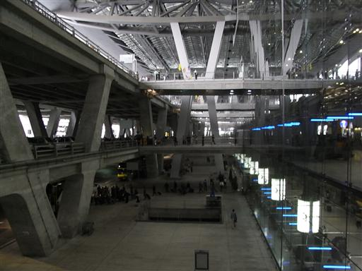
バンコク市街地までの交通手段はタクシー、空港バス、路線バスがある。
せっかくなので路線バスで向かってみることにする。
まずはバスターミナルまで空港のシャトルバスで向かう。
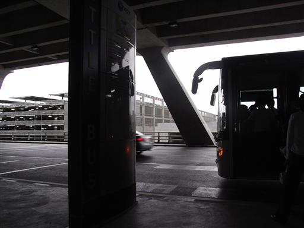
バスターミナルに到着。
多くのバスが発着を繰り返している。
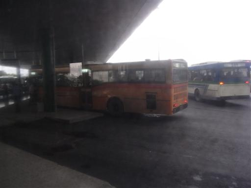
バスの内部は日本とあまり変わらない（ちょっと座席は固いが…）。
発車後に車掌が料金の徴収に来る。
料金は34Bだった。ちなみに1B=3.3円。
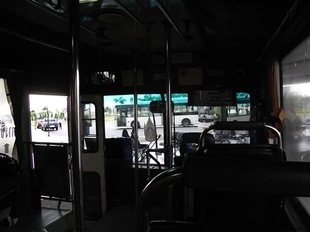
道路は渋滞。比較的新しくてきれいな車が多い。日本車の数も相当多い。
路線バスは高速道路を使わないので時間がかかってしょうがない。
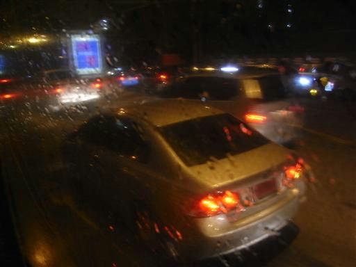
1時間30分かけて終点にたどり着く。時刻は7時でもうあたりは暗い。
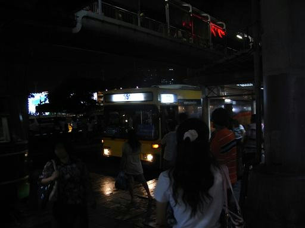
タイにもセブンイレブンがある。街のコンビニの数は日本よりも多い。
そのほとんどがセブンイレブンだ。
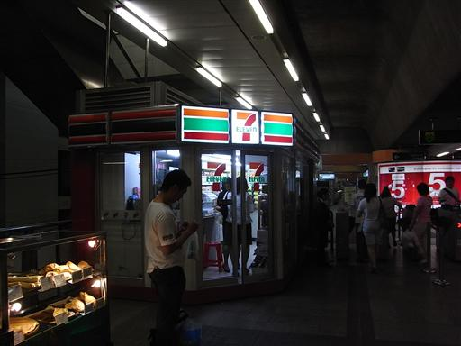
周りには露店が並んでいる。人の数も多く活気がある。
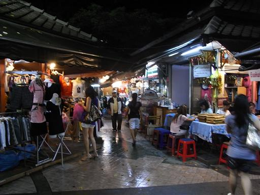
ロータリーの中心部に戦勝記念塔が建っている。
1日目の宿だけは予約してあるのでホテルに向かうことにする。
トゥクトゥク（三輪タクシー）の運転手と交渉するが、
ホテルも分からないしガイドブックの地図を見せてもよく分かっていない。
さすがに時間切れ。ホテルまで3.5km。歩くことにする。
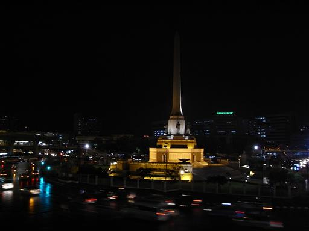
無事ホテルに到着。中級ホテルだが部屋はきれい。
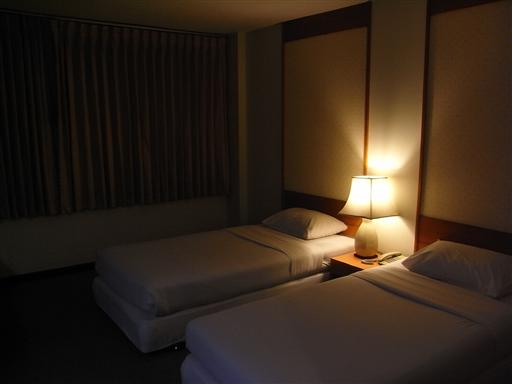
ホテルの窓から外を眺める。この辺りはあまり光が見えない。
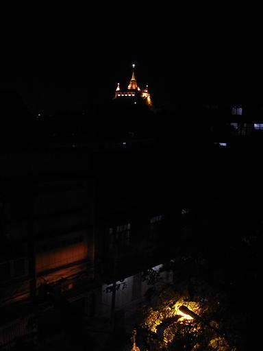